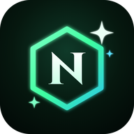

These terms are an agreement between you and Apoji Delegraphics ("Apoji", "we", "us"), run by Lucas Bryant Roland. They cover Nexus '28 for Mac and Windows, Nexus Test Run (the web version), N28C (the phone app), the Nexus status and website pages, and Apoji Admin (together, "the services").
By creating an account or using the services you agree to these terms. If you don't agree, please don't use the services.
Some parts only apply to some people: section 10 is for beta testers and section 11 is for admins and moderators.
You must be at least 13 years old. If you are under 18 (or under the age of adulthood where you live), a parent or legal guardian must agree to these terms for you and is responsible for your use.
In some countries the age to agree on your own is higher (for example up to 16 in parts of Europe). If that applies to you, you need a parent or guardian's permission until you reach that age.
If we learn that someone under 13 has an account, we will delete it.
Nexus '28 is an AI assistant with several agents (such as Flash, Lyte, Neodela and Paragon), features like study decks, Spaces, missions, routines and voice, and apps that work together (Mac, Windows, web and phone).
We add, change and remove features over time. Some features are labeled beta: they are unfinished and may change or go away.
We try to keep the services running but can't promise they will always be available. Maintenance and outages are posted on the status page.
If you add your own API keys or connect other services, they are stored on your device (or, if you choose, carried to your other computer locked with your passcode). Your use of those providers follows their terms, and any costs are yours.
Don't use the services to:
We may remove content, limit features, or suspend accounts that break these rules. Reports can be sent from the apps.
You own what you write and what Nexus writes for you, as far as the law allows. You give us permission to store, process and send your content only as needed to run the services (for example syncing your chats if you turn sync on, or showing your posts to members of a Shared Space).
Most of your data stays on your device: chats, study decks, memory and settings live there unless you turn on chat sync, move to another computer, or use features that need the cloud.
Nexus gets better by learning from real conversations. Here is how that works:
Access to Apoji Admin is by invitation and can be changed or removed at any time by the Owner or a high-admin. If you are a moderator, admin or high-admin:
Breaking these rules can mean losing access and, where the law requires, being reported.
Redeeming an aARgon3 or Mexel order links it to one Nexus account and turns on the perks for that plan. An order can only be redeemed on one account. We (or an admin helping you) can redeem or remove a redemption, for example if the order was refunded, cancelled or redeemed by mistake.
Free features have daily limits (for example answers on the free Nexus key, Nexus speech minutes, and Test Run answers). The limits are shown in the apps and may change. Your own keys are not limited by us.
Points, streaks, achievements, challenges and orb skins are for fun. They have no cash value, can't be sold or transferred, and may be reset or changed.
What we keep in our cloud database (hosted by Supabase):
We don't sell your personal information and the services don't show ads. We share data only with the providers that run the services (such as Supabase, AI providers, GitHub for updates, and email services for changelog emails you sign up for), or when the law requires it.
We keep data while your account is open. When you delete your account, your cloud data is deleted, except records we must keep (such as moderation logs) for a limited time.
United States: depending on your state (for example California), you can ask to know, get a copy of, correct or delete your personal information, and you won't be treated differently for asking. We don't knowingly collect information from children under 13.
Canada: under PIPEDA (and Quebec's privacy law), you can access and correct your information and withdraw consent, subject to legal limits. We use your information only for the purposes described here.
European Union, EEA, UK and Switzerland: under the GDPR (and UK GDPR), we use your information to provide the services you asked for (contract), to keep them safe (legitimate interests), and for training only with your consent (or, for beta testers, as part of the beta program you chose to join). You can access, correct, delete, restrict, object, move your data, and withdraw consent at any time, and you can complain to your local data protection authority. Your data may be processed in the United States.
To use any of these rights, contact us (section 21). We may need to confirm it's you.
The services use and link to other companies' services (for example AI providers, GitHub, Supabase, Tailscale and app stores). Their terms and privacy policies apply to them, and we aren't responsible for them.
You can stop using the services and delete your account at any time. We may suspend or close accounts that break these terms or put others at risk, and we may stop offering a service. Sections that should last (like 5, 8, 19 and 20) continue after.
The services are provided "as is" and "as available", without guarantees of any kind, to the extent the law allows.
To the extent the law allows, Apoji is not liable for indirect or lost-profit damages, or for losses caused by AI answers, actions you approved, third-party services, or data you didn't back up. Our total liability is limited to the amount you paid us for the services in the 12 months before the claim (or US$50 if you paid nothing).
Nothing in these terms takes away rights you have as a consumer that can't be waived where you live (for example in the EU, UK or Canada).
We may update these terms. When the meaning changes, we'll show the new version in the apps; continuing to use the services after that means you accept it.
These terms are governed by the laws of the State of North Carolina, USA, without regard to conflict-of-law rules. If you live in Canada, the EU, EEA, UK or Switzerland, you also keep the protection of the mandatory laws of where you live and may bring claims in your local courts.
Questions, privacy requests or reports: apojidelegraphics101010@gmail.com, or use Feedback in any Nexus app.